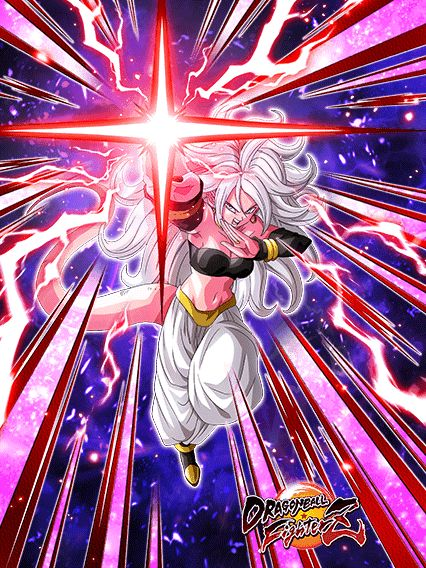
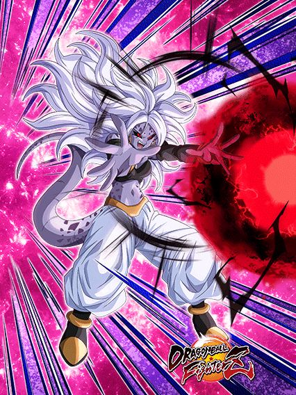
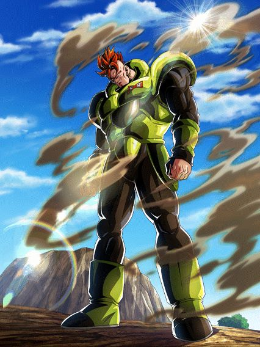
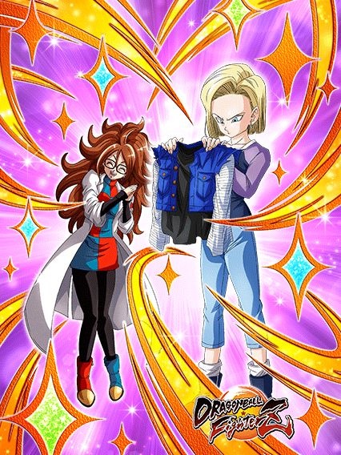
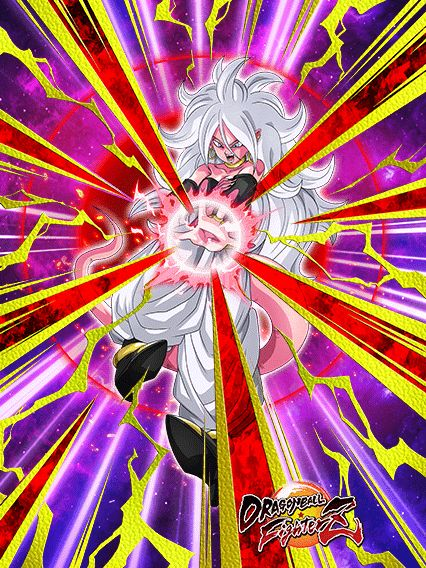

Tentando entender de onde isso veio.
Isso veio num timing muito estranho e ainda por cima é uma celebração compartilhada do global e jp (me pergunto se isso tem a ver com a sincronização ou não.. hmm)
Ninguém tava esperando isso já que geral já ia skippar o super trunks mas olha só, veio novidade gamer.

Bom, eles tentaram muito.
Essa 21 literalmente é só mais uma demonstração que metade do time de balanceamento desse troço não está prestando atenção nos eventos, já que pela milésima vez ela é um card slot 2 ou 3, com nenhuma mecânica que ajude ela e poxa, podia ser melhor
A 21 tem uma das mecânicas mais irritantes que existem, que é ter 50% de chance de desvio, mas só DEPOIS que ELA ATACAR, e o pior é q ela ganha um buff de ATK depois de desviar, então pq ela não desvia sempre?
O maior problema dessa 21 é o fato de ela não ter um balanceamento legal nas habilidades
O kit dela tem bastante coisa, é longo, mas ainda sim ela não consegue funcionar direito por haverem opções melhores
Junta isso com metade do kit dela sendo a seguinte mecânica de adicionais:
De novo, muita coisa né? O kit é legal mas tem falhas visíveis pela falta de competência da akatsuki, já que uma coisa que essa 21 tem são facilmente uma das melhores animações em supers desse ano e até do jogo todo slk.
Bom, ela se transforma mas já vou avisando que não adianta muito
Ajudar ajuda, mas é complicado, ainda mais pela condição de transformar dela, turno 5 contra apenas 1 inimigo é de se matar viu..

21%.
Que maravilha, pegaram um personagem com relação importante com números e fizeram uma passiva inteira com isso 💀
Bom agr a 21 se torna uma máquina de curar vida, já q assim q vc transformar, ela já vai curar 30% de HP e cada super attack recupera 5%, além de curar mais vida se vc sair do turno abaixo de 60%, oq é bem decente.
Eu não sei qual é a de fazerem personagens crossover ganharem um buff muito grande no super, já que TODOS tem isso, e não é uma coisa ruim pq é um buff multiplicativo que ajuda demais mas caramba cara, a 21 precisa levar 1 golpe pra ter 60% de DEF a mais e 35% do kit dela só ativa quando ela dá um super, aí fica difícil
Ela lança 2 adicionais e cada um com 70% de chance de serem supers, coisa muito boa a não ser q vc consiga a sorte grande de não conseguir 70% nenhuma vez, aí pode fazer o L a vontade
Ela transformada tem sorte de ter uma defesa mais decente e ganhar Big Bad Bosses, já que ela tem incríveis 21% DE REDUÇÃO DE DANO, mas pelo menos depois que ela der super, pelo menos rainbow, ela consegue ficar na casa dos 1 milhão de DEF, isso claro se suas chances de adicional ativarem e sua build do hidden potential tmb
No geral a 21 continua frágil mas ter a redução de dano ajuda ela a tankar os AOEs hilários dos bosses (muito divertido), então ela é bem melhor mesmo
Ela tmb tem uma active que quebra uma ação do inimigo e deixa ela efetiva contra tudo no turno, mas infelizmente a falta de algum stack faz ela imitar o fraudehan e sua active sem dano, mas ela compensa fazendo a mesma coisa q o vegetto, a active conta como super e ativa os stats a mais dela, oq ajuda no slot 1
Eu pessoalmente não gosto da active mas poxa, é pelo menos decente e ajuda a 21, já que esse card no geral faltou muita coisa pra ser melhor, especialmente depois de lançarem um dokkan fest honorário no heroes.

Ela tem um sonho.
Eu gosto de q apesar de a comunidade dokkan não ter neurônios funcionais, todo mundo concordou que a ost da intro dela é uma ost de jojo, não tem argumento contra
Sobre a 21, ela é a parceira de link perfeita pra 21 dokkan fest, já q depois de transformar elas compartilham 6/7 links, incluindo big bad bosses q eu nem preciso explicar a importância
Essa 21 basicamente é muito boa no começo da luta e vai enfraquecendo depois, já q ela tem um buff bem alto de 120% de ATK e DEF e 70% de lançar um super adicional na intro dela
Junto com isso ela tem um buffzinho de ATK e tem incríveis 21% de redução de dano enfrentando 1 inimigo... Eu não preciso falar dos 21% outra vez né?
Uma coisa diferencial dela é q ela é um card muito forte quando vc ou o inimigo tão no limite da vida, já q se sua vida estiver abaixo de 60% ou o inimigo estiver abaixo de 30%, ela crita garantido, isso é bem forte considerando q ela pode lançar 3 supers por turno e cada super aumenta 50% ATK e DEF no turno, então no geral bem forte
Infelizmente ela não dá suporte direto pra nada, e tem uma mecânica de final blow que cura 30% de HP, não é a coisa mais incrível do mundo mas tá ali né
Em resumo, é um card bom mas q tem certas falhas em design, mas no geral, muito boa no começo da luta (aparentemente essa 21 tava bugada e a intro dela tava durando mais turnos q deveria, mas aí eu n confirmo pq não fiz summon xd)

O cara que fez o eza do goku black retorna pra cozinhar novamente.
Esse eza tá em um nível forte até demais pra um time parado e vazio como androids, pq ele é insano
Pra começar, stats altos, buffs de passiva, e simplesmente 50% de chance de desvio pq sim, isso já é bom, mas melhora
Eles simplesmente ganham mais 35% de DEF multiplicativo e um adicional de 50% de ser super depois de desviar de apenas 1 ataque, só isso, desviar de 1 ataque, incrível demais
E como se não bastasse esse card ter uma defesa muito decente e o desvio, eles completam sendo um suporte de 50% de ATK e DEF pra androids, poderia ter pedido mais?
Esse card consegue ajudar a 21 dokkan fest um pouco pelo menos com o suporte, mas se vc achou q defesa decente + suporte e desvio foi uma boa combinação, se prepara pra parte divertida..
De novo, ezas não podem mudar condições de active, mas trocar pro android 16 por apenas 3 turnos é o bastante pra causar um baita estrago..

É isso, o cara q fez o eza precisa de um aumento.
O android 16 dura 3 turnos apenas e isso é sorte pro boss, já que ele literalmente desmantela qualquer coisa q cruzar seu caminho
Pra começar o 16 tem um buff de 160% de ATK e DEF multiplicativo em cima de 240%, já sabe oq vai acontecer né?
O 16 literalmente dá mais de 19 milhões de dano crítico garantido e aumentando a defesa num nível inimaginável, já q com um triplo super ele literalmente chega em mais de 2 milhões de defesa como se não fosse nada, ele só pode.
E sim, eu disse triplo super, pq esse cara lança um super adicional quando tiver mais androids na rotação, tem noção de quantos cards precisam de uma mecânica fácil assim?
No geral o 16 é absurdo de forte, comparável a outros deuses do jogo nos melhores turnos e isso é muito bom, já que androids é uma categoria meio ignorada e esse eza abriu muitas possibilidades pra mais buffs, quando lançarem um cell max ou dupla dos gammas, o time vai ser muito forte e competitivo, viu só oq um eza decente pode fazer?
")
Ahh entendi, então a 18 com a alma de outra pessoa merece um nome diferente mas o Zamasu com metade do corpo em decomposição não? Que legal HAHAHAHA-
Essa 18 é bem simples: Ela é um suporte pra Androids e Crossover
Pra começar, ela builda um pouco de ATK e DEF por turno passado, e isso é uma desgraça mas fazer oq né
Uma coisa legal dela é que ela passa a curar 18% de HP pra sempre a partir do turno 3, então é interessante
Bom, ela não tem nenhuma mecânica defensiva, então ela vai ser frágil mesmo buildada, torça por uma build de desvio no hidden potential
Uma coisa legal dessa 18 é que a Android 21 aparece nas animações e na arte dela, e o SSR dela é bem legal

Praticamente um momento "tá frio, use teu casaco"
Achei fofo.

A super class com big bad bosses.
Bom, essa 21 tinha literalmente o suporte como o kit inteiro dela, então eu diria que agora ela realmente tem um kit jogável olha só
Ela tem muitos 21s no kit, é impressionante, mas basicamente ela tem 121% de ATK e DEF base e ganha 21% por androids no time e outros 21% por power absorption, então sim, ela é limitada a 1 time praticamente, mas ela até funciona bem nele
Infelizmente ela só faz isso, não tem outra coisa q ajude mais, o melhor q dá pra fazer é colocar desvio nela, e torcer, já que ela até tanka bem mas é aquilo né, tem limites
Mas no geral, um card muito decente pra uma f2p, já que ela tá linkando 6/7 links com a dokkan fest e dando suporte ainda, belo card (sempre confiei nela)
Você chegou ao fim dessa página!
Obrigado por ler tudo, e fica a vontade pra ver outras